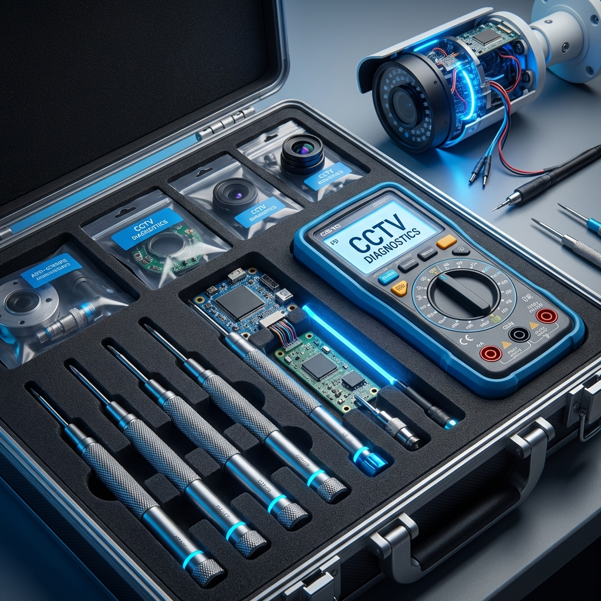

Repair & Maintenance (AMC)
Keeping your surveillance systems active 24/7 with expert technical support.

Expert Troubleshooting
Is your CCTV showing "No Video"? Or are your recordings missing? Our expert technicians in Unnao can fix any issue related to DVRs, NVRs, Cameras, and Power Supplies. We bring the tools and parts to your location for instant repair.
- AMC Plans: Low-cost annual maintenance for peace of mind.
- Quick Response: Same-day service in Unnao city and nearby towns.
- Original Parts: We only use genuine adapters, cables, and connectors.
Service Areas in Unnao
We provide doorstep repair services across the following locations:
Safipur
Main Market & Residential Blocks
Bangarmau
Industrial Units & Shops
Nawabganj
Highway Sites & Schools
Purwa
Village & Town Security